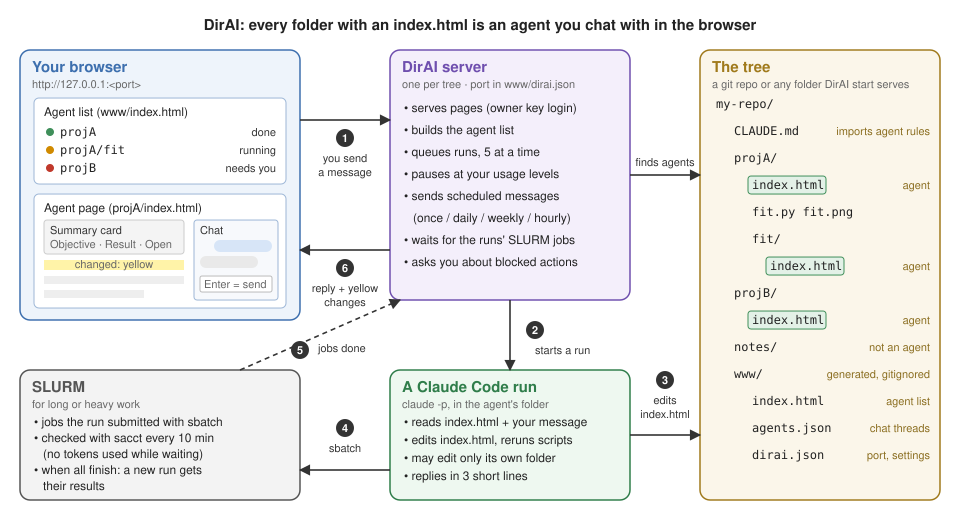
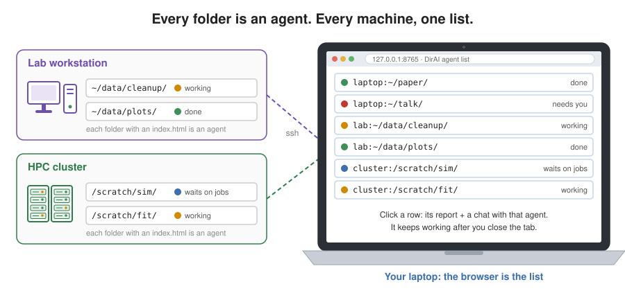
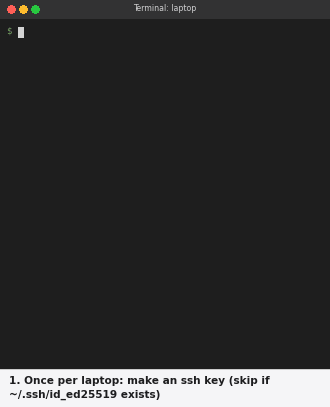
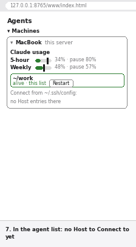
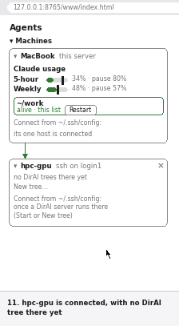
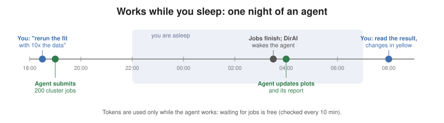
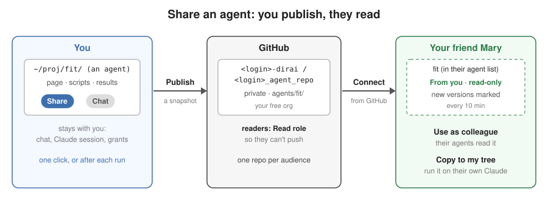

DirAI user guide, README and its figures
The user guide, and the home of DirAI's README.md work: the figures it shows, the scripts that draw them, its opening and the claims behind it. Lead with what a user gets: agents that work 24/7, and every machine in one list, where every folder is an agent with a memory.
Summary
- Objective
- Hold the user guide (install, trees, the agent list and panel, agent rules, permissions, settings, commands). Keep DirAI's
README.mdclear and selling: a newcomer understands in 10 seconds why to try DirAI. Hold its figures and their scripts. - Inputs
README.mdhere (the rootREADME.mdis a link to it),web/agent_list.js,web/files.js,web/panel.js,lib/remotes.py,lib/server.py,lib/claude_usage.py, proposal 64 (improvement/readme-pitch, moved here 2026-11-11).- Outputs
README.md(the repo's README; the rootREADME.mdlinks here),overview.svg(overview.py, at its top),ssh_config_demo.gif,connect_demo.gifandnew_tree_demo.gif(all fromssh_config_demo.py, in README "Add a machine"),hero.svg(hero.py),night.svg(night.py),connections.svg(connections.py),share.svg(share.py), this page.- Result
- 2026-11-19, user guide: the root page's tutorial (§1–11) moved here as the User guide. Brought up to date on the way: the curl install, Codex as a second engine, sticky notes, ⤓ downloads and subfolders in Files, auto compact instead of a Compact button, inline SVG, and
DirAI pullafter a history rewrite. 2026-11-19:README.mdnow has agent sharing, as a fifth benefit and a section "Share agents with other people", checked againstlib/shares.pyandweb/share.js(sharing).README.mdnow opens with the former draft (2026-11-11, what changed): headline, hero picture, 3 benefits, night timeline, 2-command start, "Add a machine" with the GIF and the Machines figure. Then come "How it works" with the architecture diagram, Setup, Use, Where things live, Agent safety and Tests. Each claim was checked against the code (table). A mock-up of the Machines section and the Schedule editor (figure). An~/.ssh/confighow-to (how-to), with 3 short animations: the terminal steps (28 s), Connect (13 s) and New tree… (14 s) (animations), already inREADME.md. Host keys stay manual (noaccept-new, decided 2026-11-10). - Open
- The guide's figure
overview.svgstill draws "Claude Code runs" and SLURM. Pushed in2dd89e1(2026-11-19): the agent-sharing section ofREADME.mdwithshare.svg(sharing), and the one-line curl install (install), and Codex and Ollama named next to Claude (engines). "Use (per tree)" is removed (details). "How it works" is removed and SLURM isn't named (details); the"slurm"config key stays unless you say otherwise.connections.svgstill says only "Claude usage"; to redraw it, say so.install.sh's header still says the repo is private; the root agent should fix it. The checkout is now up to date (fast-forwarded to56eafffon 2026-11-19), so it can be committed and pushed when you ask.The newREADME.mdand the redrawn figures are pushed (963f050). Then pushed ind723d37(2026-11-11): "Install details" (note), the section renamed "Run agents on another machine", and the animation split into 3 GIFs of equal height on one line (split, one row). Pushed in4d0da57: the 3 GIFs scaled to 66 % so they fit in one row on GitHub (scale). Not committed yet: the same GIFs drawn natively at that size, so the text is sharp again (sharpness).Look atgithub.com/wang2366/DirAI: its front page should show the newdocs/README.mdwith every picture (D5 (a)). This can't be checked from here. The commit also holds this page as it was just before this note. Old pictures in the repo (searched 2026-11-11 for every copy of these figures). The only stale ones are old PNG renders from 2026-11-08 in the repo's roottmp/:overview.png,hero.pngandnight.png. They are untracked, so they were never on GitHub, and they belong to the root agent, so this agent can't delete them (it may delete only insidedocs/). To remove them:rm ~/DirAI/tmp/overview.png ~/DirAI/tmp/hero.png ~/DirAI/tmp/night.png. Everything indocs/is current and in use.night.svgis the one picture inREADME.mdthat wasn't redrawn. If it is the outdated one, say what to change. Checkconnections.svgand the redrawnhero.svg(figure) in a browser: their text widths are estimated. D1 (ownership in the headline, plus a fourth benefit) and D3 (no recording) are decided (decisions). Done:README.mdlives here asdocs/README.md, and the rootREADME.mdlinks to it, on main sincedd20266(history). - Updated
- 2026-11-19
User guide
How to install DirAI, serve a tree of agents and work with each one. Moved here from the root page on 2026-11-19 and checked then against the code; the proposals for DirAI are in improvement/. The README work follows after the guide.
The idea
Each folder with an index.html is an agent. That page is its report: results and
write-up in HTML (plans go in <folder>/plan_*.html). DirAI serves the folder they share
(the tree) and lists every agent in one place. As the owner, opening an agent's page shows a chat
panel; each message starts a background claude -p run in that agent's folder.
A tree can be a git repo or any folder, such as ~/work holding several repos. Each tree runs
its own server on its own port.

overview.pyInstall (once per machine)
You need Python 3.6+, git, curl and an agent engine: Claude Code
(~/.local/bin/claude, or set DIRAI_CLAUDE_CMD to its path) or the Codex CLI.
curl -fsSL https://raw.githubusercontent.com/wang2366/DirAI/main/install.sh | bashIt clones DirAI into ~/.local/share/dirai and puts DirAI on your PATH; run it again to update.
Machines you add under Machines need no install: DirAI copies itself there.
In a checkout of your own, DirAI pull updates it (see the commands).
Set up a tree
cd ~/work # a repo (anywhere inside it), or the top of any folder
DirAI start # the first time, sets the tree up; then starts the server and waits until it answersThe first start in a folder sets it up: it picks a free port and writes www/dirai.json, and creates
www/ for DirAI's files (agent list, chat threads, caches, logs). In a git repo it also ignores them in
.gitignore and adds @~/.config/dirai/AGENT_RULE.md to CLAUDE.md, so your own Claude
sessions there follow the agent rules too. Outside git it asks first whether to serve that folder
at all, then whether to touch CLAUDE.md, since that would apply to every project below. A bare
DirAI starts an existing tree but never sets one up. (DirAI init still sets a tree up without starting it, for scripts.)
After that, any DirAI command works from folders below the tree: it finds the nearest
www/dirai.json above you. From anywhere else, use DirAI -C ~/work status.
start won't set up / or your home
folder as a tree, and won't run a tree that overlaps a running one (e.g. ~/work and
~/work/projA), because both would serve, and edit, the same agents.Open it in the browser
Log in once per browser. The login sets a year-long cookie that marks you as the owner, then shows the agent list:
PORT=$(python3 -c 'import json; print(json.load(open("www/dirai.json"))["port"])') # in the tree
open "http://127.0.0.1:$PORT/_review/login?key=$(cat ~/.config/dirai/key)"After that, bookmark http://127.0.0.1:<port>/www/index.html.
index.html
files, but nothing else. The panel runs Claude with your account and files, so it needs a connection from
this machine and the secret cookie. On a shared cluster node, other users can reach
127.0.0.1 too; the key is what proves it's you.Trees on other machines: Machines
Run DirAI on your laptop too, and reach every other machine from its agent list. Open the Machines section,
pick a host under "Connect from ~/.ssh/config" in that machine's box (it lists the Host entries there) and click
Connect. DirAI copies itself to ~/.local/share/dirai on that machine if needed, lists its trees,
and adds their agents to the same table as your own, with the same columns, sorting and filter. Each agent is then named
machine:path/folder/, e.g. nas:~/work/photos/. Each tree's box has Open, Restart and
Stop… (asks first, and offers Stop when idle); a stopped tree gets Start, and × forgets it (the same as
DirAI forget there); New tree… sets one up. When a machine's DirAI differs from yours, its box says so, with Update.
A machine you reach only through another (a cluster through an always-on NAS) is connected under that machine's box.
You log in once, to your laptop's own list; DirAI passes the remote keys on over ssh. Needs ssh keys that work without
a password prompt (how to set them up: add a machine with ~/.ssh/config). Details: proposal 16.
Each machine runs one engine, Claude Code or Codex: click the title of its usage widget to switch.
ssh -N -L 8765:localhost:8765 <host>, then the login link above with that machine's key
(~/.config/dirai/key there).The agent list
/www/index.html lists every agent in the tree, newest first, with its folder size and the Claude
tokens spent in it. As owner you also see each agent's chat status (working, unread, read, closed), your
Claude plan usage (one line per window, with the level at which new runs pause), and the
New agent and Refresh buttons. New agent has a Where choice: this tree or any running tree under
Machines, with the folder relative to the tree you pick. It rebuilds every 10 minutes, whenever an agent is created, and when you click Refresh (which also checks the SLURM jobs agents wait on right away);
DirAI build rebuilds it now.
Click the ☆ beside an agent to make it a favorite (click ★ again to remove it); the
★ Favorites tab above the filter (the first tab, and the one shown until you pick All) shows only those, and the filter still narrows them. Favorites are kept
in www/favorites.json, so they are the same in every browser; the tab you last picked is remembered per browser.
The scan skips .git, node_modules, virtualenvs, caches and other trees'
www/ folders. Add your own under "exclude" in dirai.json.
The agent's panel
Open any agent's index.html and click Chat (bottom right), type, and press Enter to send (Shift+Enter for a new line;
on a touch screen, tap Send).
The reply appears when the run ends. You can keep typing while the agent works: each message waits (dashed, ⏳ queued)
with ✎ edit and ✕ remove, and goes when the run ends, several as one numbered message. After a
cancelled or failed run they stay until you press Send now. A status bar at the top of the page shows what the agent is working on
and your SLURM jobs there; it's hidden when there's nothing to show.
| Control | What it does |
|---|---|
| Ask the agent about this | Select text in index.html and click it: your message is sent with that
passage (and its heading) attached, so you can say "this number looks wrong". |
| Replies | Kept to about 3 lines; the details go into index.html. A link in a reply jumps to that
part of the page, and a longer reply opens with more. |
| Schedule… | Send a message to this agent later: once at a date and time, daily, weekly on chosen days, or hourly, at a clock time. The list under the buttons shows what is waiting for this agent; edit or delete from there. A message due while the agent is busy waits until it is free. |
| Model picker | Model for this agent's next messages. Sonnet (default) uses less of your Claude limit than Opus; the local gpt-oss models (via Ollama) use none but are slower. |
| + Sticky note | Select text and leave a note on it; many per page, numbered yellow marks. Send notes puts the open ones in your next message as chips;
the agent answers on each note, and you can reply on a note. Kept in the agent's .notes.json. |
| Files in this folder | At the end of index.html: every text file in the agent's folder,
raw with line numbers, collapsed (a .md rendered, with a Raw switch; then other files with thumbnails,
and subfolders, which open at any depth). ⤓ downloads a file, or a folder as .zip. Select lines in one and click
Ask the agent about this: the message names the file and lines, the agent edits them, and the section
reloads with the changed lines highlighted (removed ones in red, collapsed) when the run ends. |
| Hide changes | Parts of index.html the latest run added or changed are highlighted in yellow; what it removed is shown in red, collapsed (click to open). This toggles both. |
| ↶ Undo / Redo ↷ | At the upper left of each block the latest run changed in index.html. Undo puts that block back as it was before the run; Redo (shown where you undid one) brings it back. The agent is told on your next message. Not offered once the page was edited by hand after the run. |
| Mark read / TaskDone | Clear the unread badge / close the thread. A new message reopens it. |
| Auto compact | No button: when a run ends past the context limit (default 200K, per tree and per agent), DirAI runs
Claude Code's /compact, so the session continues with fewer tokens per message. |
| New chat | Next message starts a fresh session that re-reads index.html and the last few messages. |
| Allow once / Always allow | Shown when Claude was blocked from something. See access. |
| Colleagues | Other agents this one may read and whose grants it shares. See access. |
| Permissions | At the end of the summary card, collapsed: what this agent was granted. See where grants are kept. |
Long jobs
Claude submits heavy work with sbatch instead of running it inline, then ends its reply.
The agent stays "working" while DirAI checks the queue every 10 minutes (no tokens spent). When the jobs
are done, DirAI sends the agent their results so it can update index.html. You can still send messages meanwhile;
at most 5 automatic messages run in a row before it waits for you.
Usage limits
When Claude's 5-hour or weekly usage reaches its pause level, new runs wait and resume by themselves. The 5-hour level is 100% unless you drag its marker lower on the agent list; it resumes after the 5-hour reset. The weekly level follows the Auto button (on by default): on day n of the 7-day window it is n/7 of the limit (14%, 29%, … 100%), so a paused run resumes when the next day starts. Dragging the weekly marker sets it by hand and turns Auto off. Levels apply to all your trees. A run cut off by the limit is resent in the same session once the limit resets.
Writing index.html
An agent's index.html is plain HTML, written by you or by the agent. The agent rules
(AGENT_RULE.md in the DirAI checkout, given to every agent run):
- Every
index.htmlstarts with a summary card: a collapsible "Summary" with Objective, Inputs, Outputs, Result, Open and Updated (all required;nonewhen nothing applies), plus optional JSON results, between<!-- dirai:card -->markers. The one at the top of this page is an example. After a run that changedindex.htmlthe server checks the card, asks the agent once to fix it if needed, and otherwise flags it (card ✗ on the list, a note in the panel). Agents read each other's results throughdirai_card.py <folder>, a few lines instead of the wholeindex.html. - Every figure names its plotting script, as a caption with its path relative to the agent's folder,
e.g.
Script: analysis/plot_rate.sh. Ideallyfoo.pngcomes fromfoo.shorfoo.py. - Open items go in the card's Open field: what is unfinished or still running. There is no
separate
todo.md. - Reference images by relative path. The server only serves
.htmland images (.png .jpg .jpeg .gif .svg .webp); everything else is 404. This is on purpose: the pages are readable by anyone who can reach the port, so sources, data, logs and DirAI's own state (www/agents.json,dirai.json) stay private. Symlinks are resolved first (send_head()inlib/server.py), so a link is served only if its target is inside the tree and itself an.htmlor image:diff.html → foo.cppgives 404. For the owner only,/_review/files?agent=<folder>returns the text files in that agent's folder as JSON (each up to 1 MB; not links out of the folder); it is what shows "Files in this folder". Its downloads are owner-only too. A local<img src="x.svg">under 300 kB is put inline, so a diagram's text can be selected; save plots as SVG withsvg.fonttype = 'none'. - No "Home" link needed: the server adds one to every
index.html. - No CSS in
index.html. One without a<style>gets the sharedindex.cssfrom the server; use plain HTML and its classes (.note,.note warn,.tbl,figure+figcaption). Files that keep their own<style>are left as they are.
What an agent may do
Runs use claude -p --restricted with an allow list, so nobody needs to approve anything
while it runs. Your own Claude Code settings (~/.claude/settings.json) don't apply to agents.
| Where | Read | Write | Commands |
|---|---|---|---|
| The agent's own folder and every folder below it (the tree's top agent: the whole tree) | ✓ | ✓ | the defaults, dirai.json "allow" and the agent's grants |
| Each colleague's folder and every folder below it | ✓ | ✗ | plus that colleague's grants, except its edit grants |
"read_dirs" in dirai.json | ✓ | ✗ | |
| Anywhere else | only with a grant | only with a grant |
- Delete only through
agent_rm.sh, which refuses anything outside the agent's folder. - Git (agents inside a repo): add, commit and push the agent's folder, only when your message asks.
Force-push, reset, stash, rebase, clean,
rm -rfandsudoare always blocked, whatever is granted.checkoutandrestoreare refused until you allow them, and only the exact command you approve.
Grants: one agent's own
Every grant belongs to one agent. There is no grant for every agent at once: for that, use "allow" or
"read_dirs" in dirai.json.
- Name it in your message: "compare with
projB/results". Paths inside the tree that you name (relative,~/…or absolute) are granted to that agent for reading before the run starts, and logged in the thread. - Approve when blocked: the panel lists what was refused (in Ask in chat mode, the chat
asks while the run waits).
- Allow once: the retry it starts may do it; later runs may not.
- Always allow: this agent's later runs may do it too, and so may the agents that list it as a colleague.
- A refused command is granted as its program and subcommand: allowing
basecamp attachments download 123 --out xgrantsBash(basecamp attachments:*), so later downloads go through too (a program in~/.local/binalso under its full path). The panel shows the rule before you click. Commands whose second word is a flag or a path, andrm,git,curl,ssh,chmod,killand the like, stay exact. For a whole program, add a rule such as"Bash(basecamp:*)"to"allow"indirai.json(it applies after a restart).
Where grants are kept, and where you see them
- Kept in one file per tree,
www/agents.json: each agent's entry has a"grants"list. The server adds to it when you click Always allow (in the panel, or on a prompt in Ask in chat mode) and when you name a folder in a message. Allow once goes in a separate"once"list that the next run uses up. - Shown under Permissions, collapsed at the end of the agent's summary card. It lists only this
agent's own grants: not the defaults,
dirai.jsonor once-only rules. A colleague's grants are on the colleague's page. A rule that is always blocked is marked as having no effect. - Never written to
index.html: the panel draws the list in your browser fromagents.jsonwhen the page opens, right after each click in the panel, and every 4 seconds while the agent works. A new grant shows within seconds, without a restart.
Colleagues: sharing what another agent has
Open Colleagues in the agent's panel and paste a link to another agent's page (or its folder path). From the next run on, the agent:
- may read the colleague's folder and everything below it, never write to it;
- gets the colleague's grants, except its edit grants, one level deep (not the grants of the colleague's own colleagues);
- finds the colleague's summary card in its instructions (up to 8 colleagues).
So to let several agents use what one was granted (for example Basecamp access), grant it to one agent and add that agent as their colleague.
python3 x.py) can read and write whatever your
user can, and the default cp, mv, mkdir, touch,
tee and sed rules take any path. A broad "read_dirs" entry (all of
scratch, say) also widens every agent's reads.On a cluster
Start the tree on your devnode (DirAI start), another node (DirAI start NODE),
or as its own batch job (DirAI start --job; add account and partition under
"slurm" in dirai.json). Open it from your laptop through Machines: connect the cluster's
login host; a tree running on a compute node is reached through it. The cluster has its own key in your cluster home;
Machines fetches it, so you never type it.
Settings (www/dirai.json)
Per tree, local to this checkout, never committed:
{"port": 8775,
"title": "My Work",
"read_dirs": ["/data/shared"],
"allow": ["Bash(~/tools/run.sh:*)"],
"slurm": ["-A", "mygroup", "-p", "cpu"],
"exclude": ["data", "projA/build"]}| Key | Meaning |
|---|---|
port | This tree's server port. After changing it: DirAI stop, then DirAI start. |
title | Heading of the agent list (default: the folder's name). |
read_dirs | Extra folders every agent may read. |
allow | Extra Claude Code permission rules for the agents. |
slurm | Extra sbatch options for DirAI start --job. |
exclude | Folders the agent list skips: a name skips it anywhere, a path with a slash skips that one folder. |
Per user, in ~/.config/dirai/: the owner key, the list of trees
(trees) and the AGENT_RULE.md link. Grants are kept per agent, in the tree's
www/agents.json; an old permissions.json there is no longer read.
Command reference
| Command | Does |
|---|---|
DirAI start [NODE | --job] | Start the server here, on NODE, or as a SLURM job. The first time, set the tree up first: port, www/dirai.json; in git, .gitignore and CLAUDE.md lines. |
DirAI status | Node, port, start time, job time left, and whether it answers. |
DirAI restart | Reload with the current DirAI code, same node and port. |
DirAI stop | Stop the server (and its job, if it has one). |
DirAI build | Rebuild the agent list now. |
DirAI pull | Update DirAI's own git checkout (git pull --ff-only; after an upstream history rewrite listed in lib/history_rewrite.map, it moves the checkout onto the new history; otherwise refused, with the commands to run, if it can't fast-forward or would touch a file with uncommitted changes), then restart this tree's server once no agent run is going. The same as Pull, restart when idle in this server's box under Machines. |
DirAI list | Every tree you've started, up or down, with port and node (--json: what Machines reads over ssh). |
DirAI forget [PATH] | Stop the tree's server if it runs and drop it from DirAI list and Machines; the folder is kept. |
DirAI -C DIR <cmd> | Act on the tree holding DIR. |
The problem with today's README
It opens with how DirAI works (a server, claude -p runs, change marks), which is right for
someone who has already decided to use it. A newcomer first wants to know what they get. They don't see that
the agents keep working overnight, or that all their machines show up in one place, until the middle of the page.
| Today | Proposed | |
|---|---|---|
| First line | "DirAI serves a git repo (or any folder) in your browser as a set of agents." | "Your own AI agents, working 24/7 in your folders, on every machine you have." |
| First picture | An architecture diagram (server, run, SLURM) | Three machines, their folders as agents, one list (below); the architecture diagram moves down to "How it works" |
| Then | Six steps of a message | Three benefits with an icon each, then a night timeline |
| To start | Install, setup, use: three sections | Two commands, plus "put an index.html in a folder" |
The hero picture: every folder an agent, every machine one list

laptop: rows, so it no longer has a separate box. Not checked in a browser: no SVG renderer here, so the layout was checked only by its coordinates and by an XML parse. Script: hero.pyHow the machines connect
The hero picture only says "over ssh". This figure shows what a user actually sees: a mock-up of the agent list's Machines section and of one agent's panel with the Schedule… editor. The example machines are a laptop, an Oracle Cloud VM and an HPC/GPU cluster.
![Mock-up of the Machines section: MacBook (this server) linked by a green ssh arrow to oracle-vm, which links hpc-gpu. Each box has a Claude usage widget (Chart, Auto, 5-hour and weekly bars with a draggable pause mark), its trees (alive, node, port, agents, Open / Restart / Stop…, a down tree with Start and why it stopped), New tree… and Connect from ~/.ssh/config. Below, an agent panel with a scheduled message, a reply with its cost, and the Schedule editor: Once / Daily / Weekly / Every hour, at 08:00, the message, fresh chat or continue, Save schedule. Numbered marks are explained in a key.](connections.svg)
README.md, at the end of "Add a machine". Script: connections.pyHow it matches the UI. The figure is drawn from the code, not a screenshot: box parts and their order come from machineBox, treeNode and usageWidget, colours and sizes from the #rv-machines CSS, and the arrows from drawArrows (all in web/agent_list.js). The panel and Schedule editor come from #rv-panel and #rv-sedit in web/panel.js.
Differences from the real page:
- The numbered marks and the key aren't in the UI.
- Fonts are approximated.
- The two machines form a chain (laptop → oracle-vm → hpc-gpu). Two machines linked straight from the laptop would draw both arrows from its right edge, and the second would run behind the first box.
- One ssh link per machine, started by the machine above it: an ssh ControlMaster to a host from
~/.ssh/config, opened only after you click Connect on the agent list. Every 30 s (10 s while the list is open) it runsDirAI list --jsonthere. - One tunnel and one forwarder per running tree. The tunnel goes to the tree server's own 127.0.0.1 port. The forwarder (127.0.0.1 on the laptop) is what the browser opens. It passes on only requests with your owner cookie, swapped for the next machine's key, and gives a 404 for anything else.
- Compute nodes: a tree served on another node than the one ssh lands on (
DirAI start --job) is reached with anssh -Whop through the login node. - Chains: a machine reached through another one (laptop →
oracle-vm→hpc-gpu) is linked by the middle machine's server and relayed upward. Each hop checks its own key and adds the next one. - No install step downstream: when a machine has no DirAI, or an outdated one, the server above it copies its own DirAI there (into
~/.local/share/dirai) over the same ssh link. That machine needs no GitHub access. - Token usage, tracked and capped per machine: each machine uses its own Claude login, and its server reads that plan's 5-hour and weekly usage (at most once a minute;
lib/claude_usage.py). The laptop's Machines section shows every machine's usage. You set each machine's pause level there by dragging the black mark on its bar. The request is relayed down the chain (usage_stop). At or above a level no new runs start, and they resume after the reset. Weekly auto (on by default) sets the weekly level to n/7 on day n of the week, so a week's budget isn't spent on day 1. A usage history chart and each reply's $ cost are shown too. The bar lengths in the figure are examples, not readings. - Scheduled tasks: the Schedule… button on an agent's page sends it a message once, daily, weekly on chosen days, or every hour (
web/panel.js). The agent's own tree server keeps the schedule and checks it every minute (lib/server.py). A schedule for an agent onhpc-gputherefore fires with the laptop closed, and it waits if the agent is busy. On a cluster it fires only while that tree's server runs, e.g. while its SLURM job lasts. - Security: owner actions (chat, runs) are accepted only from 127.0.0.1 with the key, so from another machine they arrive only through these tunnels. Tree servers bind 0.0.0.0 by default, so their pages are readable on the network unless
www/dirai.jsonsets"bind": "127.0.0.1".
Teaching it: add a machine with ~/.ssh/config
The Connect list on a machine's box is that machine's ~/.ssh/config, so adding a machine means adding a Host entry there. Many users have never written one. This is a proposed README / tutorial section, checked against lib/remotes.py. A short version with the animation below is in README.md, as its own section right after "Start in one minute". On 2026-11-11 that section was renamed from "## Add a machine" to "## Run agents on another machine", because it now ends with starting agents there (New tree…), not only with adding the machine. The one link to it in Use ("From a laptop") now points to #run-agents-on-another-machine. No other file links to the old anchor (checked with grep over the repo's .md, .html, .py and .js files). It has 3 GIFs: the terminal steps above the 4 commands (ssh-keygen, vim ~/.ssh/config with a Host example, ssh-copy-id, the BatchMode check), then Connect, then New tree….
Split into 3 GIFs on 2026-11-11 (your D6 answer). Each one replays quickly on its own, and the 2nd and 3rd show only the browser. One script, ssh_config_demo.py, still draws all three from the same steps, so they stay consistent. The caption bar now wraps to 2 lines on the 500 px width. Checked: one frame of each, as PNGs.
In one row (asked 2026-11-11). In README.md, "Add a machine" now opens with the 3 GIFs on one line, followed by the steps 1. ssh, 2. Connect, 3. New tree. To make them fit:
- The browser GIFs are cut to the machine column: 340 × 550 px, from 500 × 560. Their captions wrap to 2–3 lines in a 13 px font.
- Same height (asked 2026-11-11). All three GIFs are now 616 px tall as drawn (407 px after the scaling), captions included: the terminal is 500 × 616 and Connect and New tree… are 340 × 616. That way their tops and bottoms line up in a row. The browser crop was 520 px, and
ssh_config_demo.pynow sets it from the terminal's height (BH = H + CAPH − BCAPH= 550), so the heights stay equal if either changes. The extra 30 px is white space under the Machines box. Checked withfileon the 3 GIFs, and by looking at the last New tree… frame. - The terminal GIF stays 500 px wide, because its longest line (the host-key fingerprint) needs about 440 px.
Scaled to fit GitHub's one row (2026-11-11, after you saw them wrap to 2 rows on github.com). At full size they were 1180 px wide together, more than GitHub's README column (about 830 px on a wide window). Now ssh_config_demo.py draws each frame at full size, then scales it to 66 % (SCALE = 0.66, LANCZOS). The results:
- Sizes: terminal 330 × 407, Connect and New tree… 224 × 407 each. That is 778 px together, so 3 in one row with about 50 px to spare. All three are still the same height.
- Text: the 14 px terminal font becomes about 9 px, and the 13 px browser font about 8.6 px. It is smaller but still readable. I checked a terminal frame and a one-row preview of all three by eye.
- Sharpness fixed (2026-11-11, you saw it blurred). In
4d0da57, frames were drawn at full size and then shrunk, which smeared the text, and the 64-colour palette made it worse. NowDrawinssh_config_demo.pyscales every coordinate, line width and font size itself. Each frame is therefore drawn directly at 66 %, with hinted text rendered at its final size (about 9 px), and the palette has 128 colours. Checked by eye on a terminal frame and the last New tree… frame. The pixel sizes are unchanged. On a retina screen, GitHub still enlarges the GIFs by 2×, so they look somewhat soft there. Being sharp there too would need full-size files shown with an HTML<img width>, which this page shows as text in a.md. - Files: 682, 73 and 199 KB.
- No HTML
<img width>is needed, soREADME.mdis unchanged and still shows here. - Below about 800 px of page width (a narrow window or a phone), they still wrap.

~/.ssh/config with one Host in vim, log in once by hand with ssh-copy-id (answer yes to the new host key, type the password), and check it. 28 s, 1.0 MB. Script: ssh_config_demo.py
~/.ssh/config, hpc-gpu is offered, and Connect goes through connecting… and copying DirAI there… to connected. 13 s, 0.1 MB. Script: ssh_config_demo.py
--job. Init and start shows "starting…", then the tree is alive with Open / Restart / Stop…. The form and the tree box follow newTree() and treeNode() in web/agent_list.js. 14 s, 0.3 MB. Script: ssh_config_demo.pyssh -o BatchMode=yes hpc-gpu hostname line needed? Not for the dropdown: the host is listed as soon as the file is saved, because the list re-reads ~/.ssh/config each time. But on a new host, Connect fails unless ssh has already logged in there once. DirAI's link to a login host uses BatchMode=yes and no accept-new (lib/remotes.py lines 44 and 382), so it can't answer "trust this host key?" and can't type a passphrase. Logging in once by hand stores the host key, and the check confirms nothing will be asked. One step can do both: a plain ssh hpc-gpu hostname that you answer "yes" to the first time. Decided (2026-11-10): DirAI stays as it is (no accept-new), and the animation shows these steps. It now has the key (ssh-keygen, step 1) and the one manual login (ssh-copy-id hpc-gpu, step 5). In that login the host-key question is answered with a yellow yes and the password is typed one last time. The BatchMode check (step 6) then shows nothing is asked any more. ssh-copy-id was picked over a plain ssh because it does the key copy and the first "yes" in one command.
Could DirAI trust the key itself? Yes, with a one-line change: add "-o", "StrictHostKeyChecking=accept-new" to the master connection in lib/remotes.py line 382, as the compute-node hop already does (line 426). ssh then stores the key of a host it has never seen and carries on. It still refuses a host whose stored key has changed, so it never overrides a "REMOTE HOST IDENTIFICATION HAS CHANGED" warning. The risk is only on the first connection: someone who can intercept that first login can pose as the host. That is what most users do anyway when they type "yes" without checking the fingerprint. Clicking Connect on a named host is a deliberate act, which makes it reasonable consent. A stricter version could show the stored fingerprint in the new machine box. Needs OpenSSH 7.6 or later (2017). It does not help with key passphrases or 2FA: those still need an ssh-agent or keys that skip 2FA. With the change, the one manual login becomes optional, and the GIF can drop its check line. That change belongs to lib/, not this folder. Not made: you chose to keep things as they are.
Safety concerns with accept-new, from worst to mildest:
- Someone between you and the host on the first connection (hotel Wi-Fi, a spoofed DNS answer, a mistyped
HostName) is trusted from then on, and nothing warns you. With a key login they can't get your private key, and they can't log in to the real host as you. But DirAI would copy itself to their machine and show it in your list as a normal tree. Anything you then type to agents "there", and any files they write, go to that machine. Typing "yes" by hand has the same hole. The difference is that the user at least could have compared the fingerprint. ForwardAgent yesin thatHostentry makes it much worse: a fake host could use your ssh-agent to log in anywhere your keys work, for as long as the link stays up. DirAI sets nothing about agent forwarding (no match inlib/), so this follows the user's config. The how-to should say not to set it for DirAI hosts.- It happens without anyone watching. A background process writes to
~/.ssh/known_hosts. That is fine for the hosts you clicked Connect on, but it should be limited to them: only the first Connect click, never a host that was merely listed. - Clusters with several login nodes behind one name (e.g.
login.hpc…answered by login1 or login2) can have different host keys. accept-new stores the first one, and a connection that lands on another node is refused as "changed". The failure is safe but looks random. The same happens after a manual login, and most centers share one key across login nodes. - A host that is really reinstalled stays refused. That is correct, but DirAI should show the "host key changed" error from its
.errfile plainly, with thessh-keygen -R <host>fix.
Safer variants, if plain accept-new feels too loose:
- Confirm in the browser. On the first Connect, DirAI runs
ssh-keyscanand shows the fingerprint (SHA256:…) in the new machine box, with "Trust" and "Cancel" buttons. Only on Trust does it add the key toknown_hosts. Same safety as typing "yes", with no terminal. Most centers publish their fingerprints, so a careful user can compare them. VerifyHostKeyDNS yesfor sites that publish SSHFP records (with DNSSEC). Few do.- Keep it as it is and document the one manual login (the GIF's
ssh-copy-idstep).
Recommendation: the browser confirmation, since it keeps the one human check while dropping the terminal step. If that is too much work, plain accept-new on an explicit Connect click is no worse than what most users do when they type "yes", provided the how-to warns against ForwardAgent.
The animation is drawn, not screen-recorded. The browser side follows web/agent_list.js:
connectPickerlists theHostentries not connected yet.- The list re-reads
~/.ssh/configat every redraw, every 10 s, becausereport()inlib/remotes.pycallsssh_hosts()each time. That is why no restart is needed. - After Connect, the new box goes through the states the code has: "connecting…" with a red dashed arrow, "copying DirAI there…" with a grey dashed one, then up with a green arrow and "ssh on login1".
Machine names, the IP and the values are examples. Rendering it here needed a workaround: this Pillow has no FreeType, so the text is drawn with matplotlib's FT2Font and its bundled DejaVu fonts.
Beyond the animation. The GIF, and the "Add a machine" section of README.md, already cover the basic steps for one cluster login node: make a key, add a Host, run ssh-copy-id, run the BatchMode check, click Connect. They are not repeated here. This part keeps only what they leave out.
- The rule behind every step: DirAI runs
sshwithBatchMode=yes, so ssh can't ask anything: no password, passphrase, "trust this host?" question or 2FA code. A key with a passphrase works only if it is loaded intossh-agentor the macOS keychain before DirAI starts. - What Connect lists: named
Hostlines. Patterns (Host *,*.cluster,!x) aren't offered, but their settings still apply.Includefiles are followed.
Other kinds of host, added to the same ~/.ssh/config next to the GIF's hpc-gpu:
# a cloud VM (Oracle Cloud and others): its key was given when the instance was created,
# so no ssh-copy-id; the user is the image's (opc on Oracle Linux, ubuntu on Ubuntu)
Host oracle-vm
HostName 129.146.10.20 # the instance's public IP
User ubuntu
IdentityFile ~/.ssh/oci_vm.key
# a machine reachable only through another one (jump host)
Host lab-gpu
HostName 10.0.3.17 # private address, seen from the jump host
User you
ProxyJump hpc-gpu # ssh first to hpc-gpu, then on to here
# defaults for every host (a pattern: not listed in Connect itself)
Host *
ServerAliveInterval 30
AddKeysToAgent yes
Without ssh-copy-id, the one manual login that stores the host key is a plain ssh: answer "yes" once.
ssh oracle-vm hostname ssh lab-gpu hostname # also records the jump host's key
Two ways to reach a machine behind another (the chain in the figure):
| How | What the Machines section shows | |
|---|---|---|
A. ProxyJump on the laptop (simplest) | The lab-gpu entry above, in the laptop's config. ssh does the jump. | lab-gpu as its own box, linked straight from the laptop. The jump host needs no DirAI. |
| B. A DirAI chain | Put the entry in the middle machine's ~/.ssh/config (and its key there). Then click Connect in that machine's box. | laptop → oracle-vm → hpc-gpu, as in the figure. Use it when only the middle machine can reach the last one, or the laptop shouldn't hold that key. |
Compute nodes need no entry. For a tree served on a compute node (DirAI start --job or New tree… with a node), DirAI hops there itself through the login node (ssh -W). It accepts a new node's key on first use, but refuses one whose key has changed.
Common failures (shown in red in the machine's box):
| Message | Cause | Fix |
|---|---|---|
Permission denied (publickey…) | The key isn't on the remote machine, or it has a passphrase and isn't in the agent | ssh-copy-id <host>, or ssh-add ~/.ssh/id_ed25519 |
Host key verification failed | Never logged in by hand, or the host's key changed | Log in once by hand (ssh-copy-id <host> or ssh <host> hostname) and answer "yes". For a changed key, first check with the admin, then ssh-keygen -R <host> |
| Hangs, then times out | The cluster asks for 2FA (e.g. Duo) at every login | BatchMode can't answer that. Ask whether keys bypass 2FA, or connect from a machine inside the network (way B) |
| Host not in the Connect list | It's a pattern, or it's in another machine's config | Give it a plain Host name, in the config of the machine whose box you click |
24/7: one night of an agent

night.pyThe new opening, now in README.md
Merged 2026-11-11 on your request ("replace the current one with the draft"). README.md is now:
- The draft's opening, as it was: headline, intro,
hero.svg, 3 benefits,night.svg, "Start in one minute", "Add a machine" (GIF, 4 commands,connections.svg) and "Built for". - "How it works": the old README's first paragraph ("DirAI serves a git repo…") moved here, with
overview.svgand the six steps. - Setup, Use, Where things live, Agent safety and Tests, unchanged except for:
- The old "Quick start" and the old "### Add a machine" are gone, because the opening covers them.
- Use's "From a laptop" now links to Add a machine.
- "Where things live" says
docs/holds "this README and its figures". - "Setup (once per machine)" repeated the install command from "Start in one minute", which you pointed out. It is now "Install details": it links back to that command, says added machines need no install, and keeps only what isn't said above: GitHub access, what
install.shdoes, requirements,DirAI pull, other models and the migration note. Not committed.
README_draft.md is deleted, since its text is in README.md (still in git history). Edits made to the draft earlier on 2026-11-11, now in README.md:
- Image paths are relative (
hero.svg,night.svg,ssh_config_demo.gif), as in D5, so the pictures show both here and on GitHub. Before,docs/hero.svgpointed todocs/docs/. - "Add a machine" now matches the GIF and
README.md. It adds thessh-keygenstep and puts the 4 commands in the GIF's order in one code block. TheHostsample sits inside thevimstep instead of in a separate block. - "Agents can read each other's results" became "Agents you make colleagues can…", as the claims table says: read-only, and only for colleagues you add.
In short:
DirAI: Your own AI agents, working 24/7 in your folders, on every machine you have.
Turn any folder into an agent. Tell it what you want, close your laptop, and it keeps going. It runs your scripts, sends long jobs to the cluster, waits for them and writes up the results. In the morning you read one page per agent, with what changed marked in yellow.
- 🌙 Works while you sleep. Agents run in the background, waiting for cluster jobs for free, and they can run on a schedule.
- 🖥️ All your machines, one list. Laptop, lab workstation and HPC cluster in one browser tab, over ssh.
- 📁 Every folder is an agent with a memory. Its report and chat carry over from one run to the next, and agents can read each other's results.
- 🔑 Yours to keep. The agents live in your folders and run on your machines, with your own Claude plan. There is no hosted service and no account.
Agent sharing in README.md (2026-11-19)
You asked for the agent-sharing feature (proposal 72, improvement/share-agents) to be added to the README. It is on GitHub in 5 commits, 8e59ffe to 56eafff. The text was first written from git show origin/main:… while the pull was denied. After you granted it, git pull --ff-only fast-forwarded the checkout to 56eafff (28 files, with no conflict with the uncommitted work). The sources are lib/shares.py, web/share.js and that agent's page. The changes:
- A fifth benefit in the opening: "🤝 Share agents with your group".
- A new section, "Share agents with other people", after "Run agents on another machine". It covers:
- what is shared (the folder, not the chat or grants);
- the one-time org
<login>-diraiand why it is needed (GitHub's Read role); - Share pill → checklist → Share as → readers → Publish (and after each run, Unshare…);
- one repo per audience;
- the reader side: Connect from GitHub, read-only rows, fetched every 10 min, Use as colleague, Copy to my tree.
- Where things live:
www/shares.json,www/shares/,~/.config/dirai/share_account.json.
Checked against the code:
- the readers' Read role (
permission=pull, shares.py line 835); - the 10-min fetch (docstring,
CACHE_S = 600); - the "run" mode;
- Unshare's confirm text;
- what is left out ("hidden files, tmp/, *.log, and files over 1 MB", share.js line 174);
- Copy to my tree and Use as colleague (share.js lines 54–56).
Not claimed in the README, because they are still open on the proposal: the "Ask owner" mail link (not built), D7 (Purdue's GitHub server), and the reader side, which is still untried with a real second person.

-dirai/README.md. Rendered with cairosvg (2026-11-19) and checked by eye: no text overflows its box. Script: share.pyInstall: one curl line (2026-11-19)
The repo is public now (notes 1 and 3), so "Start in one minute" uses curl -fsSL https://raw.githubusercontent.com/wang2366/DirAI/main/install.sh | bash. install.sh already handled being piped. With no checkout beside it, it clones https://github.com/wang2366/DirAI.git (its default DIRAI_REPO) into ~/.local/share/dirai. Run again, it updates (lines 29–45). Checked: curl -sI on that URL answers HTTP 200 without login (3700 bytes, the same as install.sh here).
"Install details" is gone. What it had:
- The requirements and how to update are now one line under the commands.
- "Other models" is its own short section.
- Dropped: the private-repo/SSH-key line,
DIRAI_BIN, moving the checkout, and the note for versions before 2026-10.
Not changed: install.sh's header comment (lines 2–3, 43) still says the repo is private. That file belongs to the root agent.
Engines: Claude Code, Codex and Ollama (2026-11-19)
You asked that the README stop naming Claude alone. Checked in the code:
lib/codex_engine.py:ENGINES = ("claude", "codex"), one engine per machine. The owner switches it by clicking the title of the machine's usage widget, "Claude usage ⇄" or "Codex usage ⇄" (web/agent_list.jsline 267). A machine with Codex and no Claude Code starts on Codex. Codex runs only in allow-list mode. Its usage windows get pause levels too.lib/agents.py: Ollama's gpt-oss and GenAI Studio models run through Claude Code (ANTHROPIC_BASE_URL).
Changes in README.md:
- "Yours to keep": "your own Claude Code or Codex plan, or a local model on Ollama".
- The sharing benefit: "on their own plan".
- The requirements: "an agent engine: Claude Code or Codex CLI".
- The machine boxes: "Claude or Codex usage".
- "Built for": now also names Codex and local models.
- How it works: "a Claude Code or Codex agent", and
claude -p(orcodex exec). - "Other models" became "Engines and models": Claude Code, Codex (and how to switch), then Ollama and GenAI Studio.
- Agent safety: a line on Codex's sandbox (writes confined, reads not, never asks).
- Usage pauses: Codex's windows.
Left as they are:
- Claude-only facts, such as
claude -p --restricted, "Claude Code permission rules" (allow) and claude.ai connectors. - The figures
overview.svgandconnections.svg, which still draw "Claude Code runs" and "Claude usage". install.sh(the root agent's file), which only looks for Claude Code: on a Codex-only machine it says Claude Code is missing.
"How it works" removed, and SLURM not named (2026-11-19)
On your request, README.md no longer has "How it works". That takes out its intro, overview.svg, the 6 numbered steps (claude -p, the 5-run limit, sbatch, sacct, the 5 automatic messages) and the "What the page gives you" table (summary card, Files, Schedule…, Colleagues, New chat / TaskDone).
SLURM, sbatch and sacct are no longer named in the README or its figures:
- The "Works while you sleep" benefit now says "cluster jobs".
- In Use,
--jobis "as a batch job". hero.svgsays "waits on jobs".night.svgsays "200 cluster jobs", and its footer says "checked every 10 min" instead of "sacct every 10 min".
Both figures were redrawn by their scripts and checked by eye in a cairosvg render.
One mention is left: the dirai.json key is literally named "slurm". It appears in the config example and in its table row, now described as "batch-job options for --job". Removing it would leave that setting undocumented. If you want it gone anyway, say so.
overview.svg and overview.py are kept, because other agents' pages link to them (improvement/inline-svg, improvement/sticky-notes, the root page).
Purdue GenAI Studio taken out of the README for now (2026-11-19, on your request). "Engines and models" now lists Claude Code, Codex and gpt-oss on Ollama only. The relay and its settings are still in DirAI (lib/genai_relay.py), just not documented in the README. Checked: "GenAI" and "Purdue" no longer appear anywhere in README.md. install.sh (the root agent's file) still prints a GenAI Studio line when it runs.
"Use (per tree)" removed (2026-11-19)
You asked whether it was still needed. It wasn't, so it is gone:
cd ~/my-project && DirAI startis already in "Start in one minute".- Updating is in the agent list: the "Pull, restart when idle" box (
pullBox(),web/agent_list.jsline 743), and Update on a machine whose DirAI differs (line 731). - Starting a tree on another machine or node is "New tree…" in "Run agents on another machine".
Dropped with it:
- the
DirAI status | restart | stop | build | listline; - what the first start writes (
www/dirai.json,.gitignore, theCLAUDE.mdimport); - the refusals (
/, home, overlapping trees); - one server per tree;
DIRAI_BROWSER;- the ssh-tunnel recipe for a laptop without DirAI.
DirAI help and the agent list still cover these. No link pointed to #use-per-tree.
Every claim, checked
Marketing text must not promise what DirAI doesn't do. Each claim in the draft, and where it holds:
| Claim | True because | Limit to keep honest |
|---|---|---|
| Works 24/7, after you close the laptop | Runs are background claude -p processes started by the tree's server; the browser is only a viewer | Only while the server runs: run it on an always-on machine, or as a job (DirAI start --job), whose wall time limits it |
| Waits for cluster jobs for free | The server polls sacct every 10 min with no tokens, then messages the agent | At most 5 automatic messages in a row |
| "Every day at 8 am", "Friday 3 pm" | Schedule… box: once / daily / weekly on chosen days / hourly, at a clock time (web/panel.js) | none |
| All machines in one list, over ssh | Machines on the agent list reads remote trees over the hosts in ~/.ssh/config | Needs passwordless ssh keys. DirAI need not be installed by hand: the server above copies it there (map) |
| Memory | Each agent's index.html (in the folder) and its chat session carry over between runs; New chat re-reads index.html | The chat thread is in the tree's www/, not in the folder |
| Agents read each other's results | Colleagues: their summary cards go into the agent's instructions, and their folders become readable | Read-only, and only for colleagues you add |
| Yours to keep: your folders, your machines, no hosted service or account | The server is lib/server.py on your machine. Agents are folders in your tree, and their reports are files there. Runs are your own claude (or Ollama / GenAI Studio through it). Remote machines are reached over your own ssh. | The model calls still send prompts and file content to the model's provider (Anthropic, or Purdue GenAI Studio); only Ollama stays on the node. The chat thread lives in the tree's www/, which is gitignored. |
| Usage stays in check | New runs pause at your 5-hour / weekly usage levels | It uses your own Claude plan |
Your decisions
| Question | Options (recommended first) | |
|---|---|---|
| D1 | Headline | Decided 2026-11-11: (a), plus the point that the user owns the agents. In README.md:
|
| D2 | Apply it now? | Decided 2026-11-11: (a). The draft went on top of README, and the old text stays below as "How it works" (merge). |
| D3 | Add a screen recording? | Decided 2026-11-11: (b), no screen recording. The drawn figures and the ssh GIF stay. |
| D4 | Where the Machines / Schedule figure goes | Settled by the merge: at the end of "Add a machine", which you chose on 2026-11-11 when the figure went into the draft. |
| D5 | Image paths in README.md | Decided and done 2026-11-11: (a). The root symlink is deleted and the image paths are relative, so GitHub shows docs/README.md on its front page and the pictures show both there and here (history). |
| D6 | A play bar for the animation? | Decided and done 2026-11-11: (a). A GIF can't have one, so it was split into 3 short GIFs (split). |
Removing improvement/readme-pitch
What is left there: index.html (11 kB, the only tracked file) and an untracked tmp/ (GIF test frames frame_*.png and one-off scripts used for the move). Everything else is in this folder now.
A search of the repo for readme-pitch outside that folder found no link into it:
- Root
index.htmlline 393 (§12 rowtodo-readme-pitch): its link already goes todocs/index.html, and it names the folder only in the text "is to be removed (adocs/to-do)". After the removal, the root agent should drop that sentence. improvement/inline-svg(check_expand.txt,decisions.svg,page_sizes.svg,check_pages.svg, itsindex.html): the folder appears only as a data label in measurements already taken. These aren't links, and they stay valid as a record.- This page: Inputs and History name it as the source of this work. That stays true.
Done 2026-11-11: git rm -r deleted improvement/readme-pitch/index.html and staged the deletion. The folder has no index.html now, so it is no longer an agent. Still to do:
- Commit: done on your go.
752e186"Remove improvement/readme-pitch: proposal 64 moved to docs/" was pushed toorigin/main(2af9f4c..752e186). - The untracked
tmp/: deleted on your go. That took 6 scripts withrm, then 31frame_*.pngand the empty folders withtmp/rm_readme_pitch_tmp.py. The folderimprovement/readme-pitchno longer exists.
History
- 2026-11-08 to 11-10: proposal 64 in
improvement/readme-pitchdrafted the opening and the figures, then the~/.ssh/confighow-to and animation; the animation went intoREADME.md. - 2026-11-11: you chose to keep all README work here, with
docs/as its agent. The figures, their scripts andREADME_draft.mdmoved here, and the image paths inREADME.mdand the draft now point todocs/. - Not done at first (done later the same day, next item): moving
README.mdtodocs/README.mdwith a link at the root.lib/remotes.pyships the rootREADME.mdto every remote machine in a tar (SHIP, line 75;tar.addat line 168, which stores a symlink as a link). A link would arrive there broken. The remote would then leave README out of its build id while the laptop counts it, so the two ids would never match and DirAI would copy itself again at every poll. Fixes: drop"README.md"fromSHIP(remote machines don't need it), or add the link only after such a change. Until then the rootREADME.mdstays a real file. It shows here only through the root agent's page. Committed asfaa856f. - 2026-11-11, on your go:
"README.md"dropped fromSHIPinlib/remotes.py.tests/test_remotes.pyandtests/test_self_update.pypass, 14 tests.README.mdmoved todocs/README.md, and the rootREADME.mdbecame the linkREADME.md → docs/README.md. Its image paths became repo-rooted (/docs/overview.svg,/docs/ssh_config_demo.gif), so they work through the link and in the file itself. Checked on test branchreadme-docs-test, then merged into main (dd20266). - 2026-11-11:
improvement/readme-pitchremoved (752e186). Then D5 (a): the rootREADME.mdlink was deleted, and the image paths indocs/README.mdbecame relative (overview.svg,ssh_config_demo.gif), so they show both on this page and on GitHub, which now showsdocs/README.mdon its front page. The comment atlib/remotes.pyline 75 was updated to match.